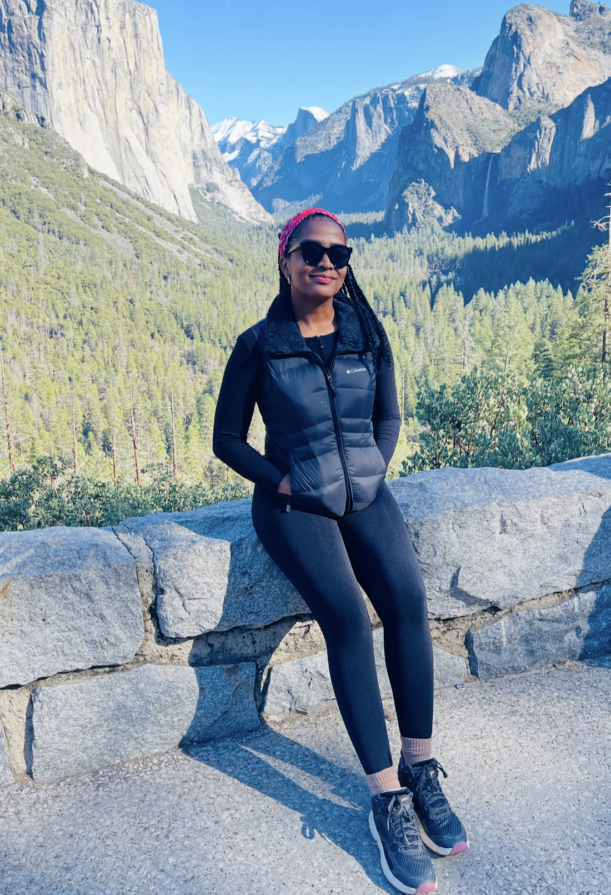

Hiking, Running, and Going to the Gym
Staying active has always been important to me. I enjoy hiking because it gives me time to clear my mind, enjoy the outdoors, and challenge myself. Running is different—it is energetic, social, and brings out my competitive side, especially when I am running with friends.
Also, going to the gym helps me stay fit and maintain a balanced lifestyle. I enjoy strength training, cardio workouts, and group classes that keep me motivated and engaged.
Tutoring Math: Helping Others Understand
I enjoy helping friends and classmates with math, especially when a problem feels overwhelming at first. I like breaking it into smaller steps until the person has learned it.
Seeing someone become more confident in a subject they once found difficult is very rewarding to me. Tutoring also keeps my own math skills sharp, which is valuable as I continue studying computer science and exploring artificial intelligence and machine learning.